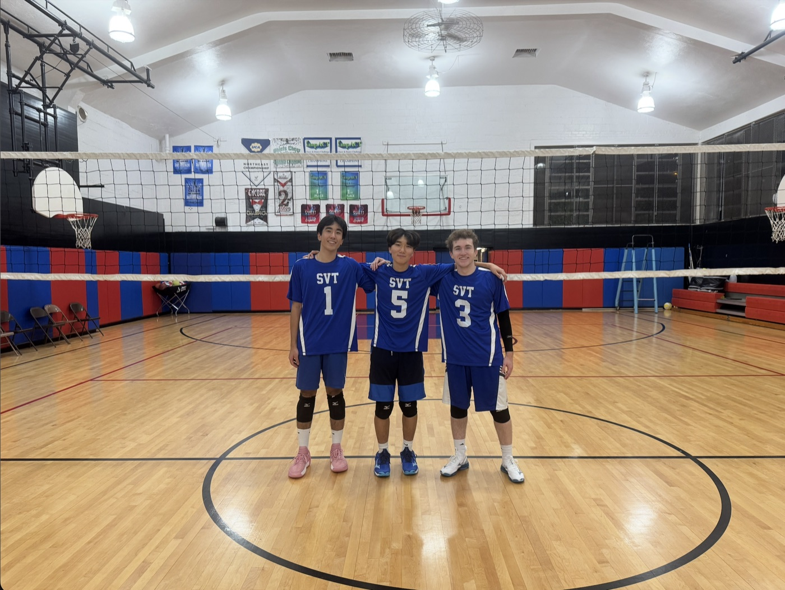
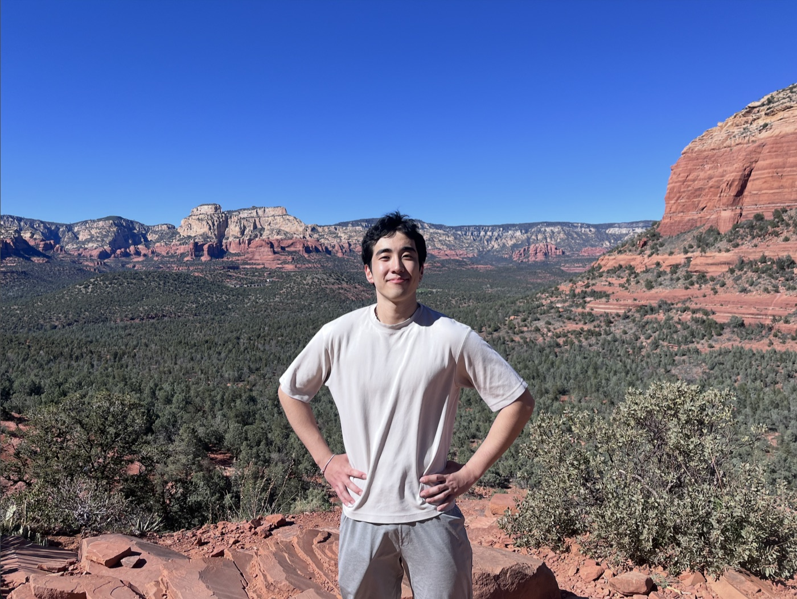

About me
Curious about how things work.
Happiest when building with others.
I’m a Computer Engineering student at Lehigh University. I like solving hands-on engineering problems and working with people who enjoy figuring things out together.
Beyond the lab
Outside of engineering, you’ll usually find me playing volleyball, spending time with friends, hiking, or planning somewhere new to travel. I enjoy meeting people, swapping ideas, and getting to know new places.
That same curiosity is what draws me to hackathons: a chance to meet a team, build quickly, and learn along the way.


Want to see what I build?View projects ↗